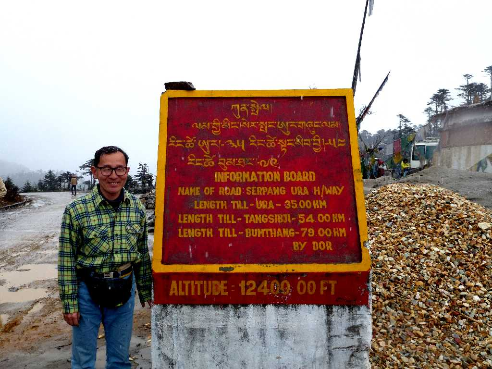
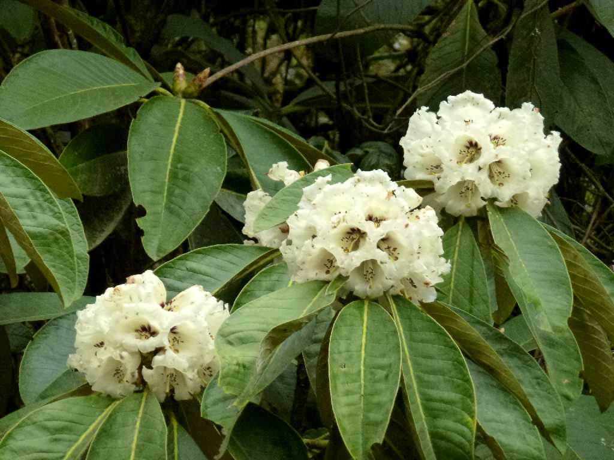
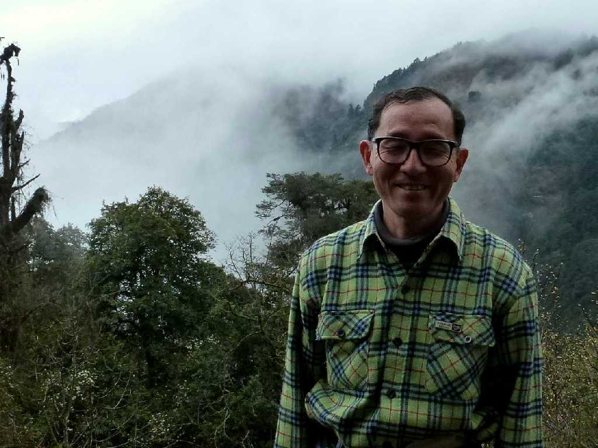
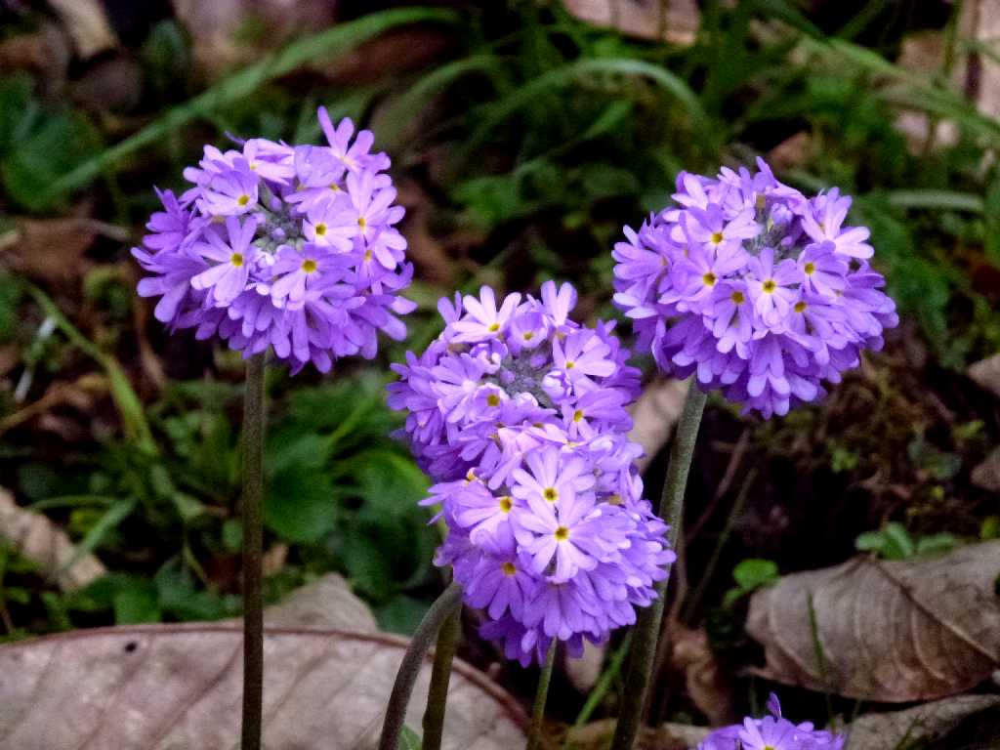

April 10 2012 12,400 feet. Thrumshing La
中央ブータンと東ブータンとの境になる標高３,７８０ｍのタムセン峠は富士山より少々高い

White Alpine Rose
白いシャクナゲが美しく咲いていた 西ブータンは赤いシャクナゲが多い

April 10 2012 White Alpine Rose

Primula
ヒマラヤ独特の手毬の様な美しいサクラソウ